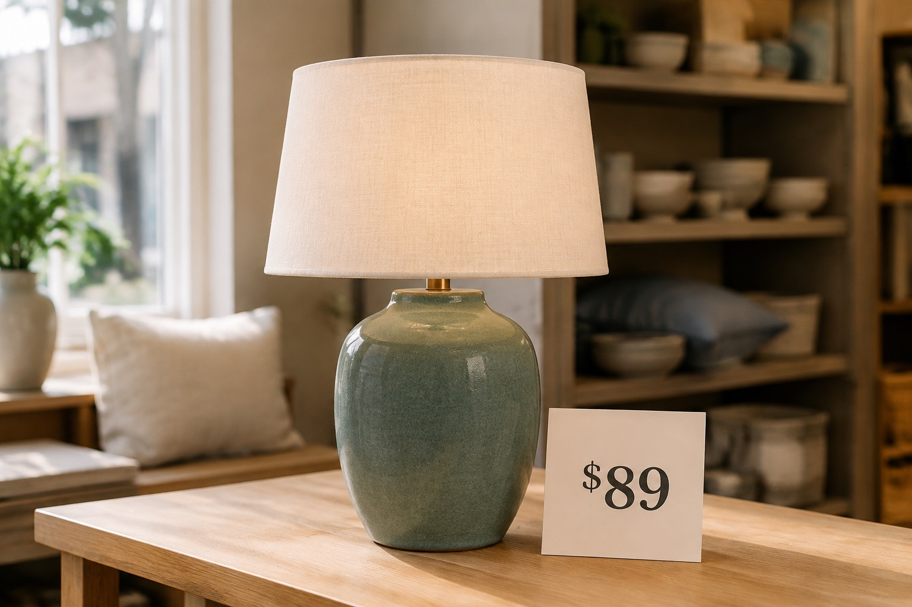

A little less to keep in your head
Remember it now.
Ask for it later.
Take a photo. Say what matters. Ask for it later. Max keeps the details behind your pictures—and helps with the lists, plans, and everyday things on your mind.
For iPhone · Basic planned at $5/month · Limited free trial planned
 A moment with Max
A moment with MaxChoose an example
Tap a tab to see Max in action.

Take or choose a photo in Max, then say
This is the lamp I liked for the reading corner.
Saved · Lamp photo and your note
Another day, ask by voice
How much was that lamp?
The price tag in your saved photo shows $89.
Tell it today
Remember Camille made andouille jambalaya for dinner. I loved it.
Saved · Dinner at Camille’s
Ask another day, in different words
What was that rice dish I liked?
Camille’s andouille jambalaya — you told me about it after dinner.
Details from different conversations
Karla’s birthday is September 9th. Dan’s is September 24th.
Saved · Karla’s and Dan’s birthdays
Later, ask across the people you know
Whose birthday is in September?
You’ve saved September birthdays for Karla on the 9th and Dan on the 24th.